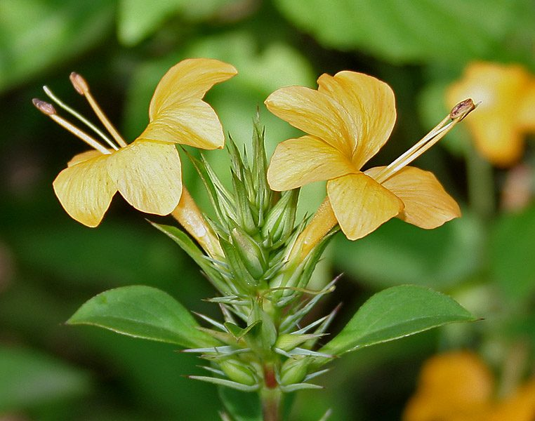

कटसरैयाPorcupine Flower
Barleria prionitis · Acanthaceae · FLR-0342

- Scientific name वैज्ञानिक नाम
- Barleria prionitis L.
- Family कुल
- Acanthaceae
- Hindi हिंदी
- कटसरैया
- Local names स्थानीय नाम
- porcupine flower, katsareya, vajradanti, barleria prionitis, peeli katsareya
- Status here यहाँ की स्थिति
- native
- Movement आवागमन
- Resident, here all year
- Known from कहाँ दर्ज
- Others have published records from the wider Awadh–Purvanchal plain, none yet from Basti–Ayodhya अवध–पूर्वांचल से दूसरों के प्रकाशित अभिलेख, बस्ती–अयोध्या से अभी नहीं
- IUCN IUCN
- not evaluated
- Review समीक्षा
- not yet reviewed
When to look कब देखें
Expected mainly in January, February, March, April, October, November, December. मुख्यतः जनवरी, फ़रवरी, मार्च, अप्रैल, अक्टूबर, नवंबर, दिसंबर में अपेक्षित।
Uses and possibilities उपयोग और संभावनाएँ
“Traditional medicine” means a documented traditional use, not a claim that it works. Nothing on this page is medical advice.
Drawn from the documented uses in the profile below, where each is labelled traditional, current or a research lead. All uses →
Tell it apart from इनसे अलग पहचानें
कटसरैया / Porcupine Flower
Barleria prionitis L. — Acanthaceae
कटसरैया — खुले बंजर मैदानों, झाड़ियों और रास्तों के किनारे उगने वाली एक कांटेदार और सुनहरे-पीले फूलों वाली बारहमासी झाड़ी। इसे पारंपरिक चिकित्सा में 'वज्रदंती' भी कहा जाता है क्योंकि इसकी जड़ों और पत्तियों का उपयोग दांतों और मसूड़ों को मजबूत बनाने के लिए किया जाता है। इसके पत्तों के आधार पर तीखे कांटे निकलते हैं।
Quick Identification त्वरित पहचान
| Feature | Description |
|---|---|
| Habit | Spiny, bushy, much-branched perennial shrub |
| Spines | Axillary, sharp, straight yellowish thorns in clusters of two to four |
| Leaves | Opposite, elliptic-ovate, entire with a sharp bristle-like tip |
| Flowers | Bright golden-yellow to apricot-orange, tubular with protruding stamens |
| Capsule | Ovoid-conical with a tapered beak containing two flat silky seeds |
Field tip: Look along dry railway lines, canal verges, or village fence lines for a low thorny bush covered in rich golden-yellow tubular flowers with sharp multi-forked spines.
हिंदी — कैसे पहचानें: पीले सुनहरे ट्यूबलर फूल, पत्तों के पास तीन-चार तीखे कांटे, और दांतों की दवा में प्रयुक्त होने वाली कड़वी पत्तियां।
Morphology आकारिकी
Shrub description: Bushy, perennial, erect prickly shrub. Stems cylindrical, much-branched, older bark pale grey, young branches appressedly puberulous. Leaves opposite, elliptic to ovate-oblong, narrowed at both ends, tapering into a short petiole; blade glabrous above, sparsely puberulous along veins beneath, terminating in a sharp spine-like mucro. Axils bearing three or four sharp, slender, yellowish spines. Inflorescence a dense terminal spike or axillary whorl; bracts linear-lanceolate, spine-tipped. Calyx divided nearly to base into four unequal sepals. Corolla bright golden-yellow to rich orange, two-lipped; upper lip four-lobed, lower lip ovate, entire. Stamens two fertile and two small staminodes. Capsule ovoid, two-seeded.
हिंदी: यह एक कांटेदार बहुवर्षीय झाड़ी है।
Behaviour & Ecology व्यवहार और पारिस्थितिकी
- Drought Adaptation: Highly resilient to long rainless spells and intense dry heat in Gangetic alluvial soils, shedding some foliage to conserve water.
- Pollination Biology: Bright yellow tubular blossoms attract diurnal solitary bees, hawk moths, and flower-visiting butterflies that hover before the corolla tube.
- Explosive Dehiscence: Dry capsules split open explosively when moistened by dew or winter showers, flinging flat discoid seeds several paces away.
- Thorny Defence: Dense multi-branched axillary spines deter grazing goats, cattle, and wild ungulates from devouring foliage.
हिंदी: यह झाड़ी सूखे और तेज धूप को आसानी से सहन कर लेती है। इसके कांटे जानवरों को इसे चरने से रोकते हैं। इसके फल चटककर बीज बिखेरते हैं।
Life Cycle / Phenology जीवन चक्र
- Vegetative Flushes: New leafy shoots emerge rapidly with the onset of monsoon rains in July and August.
- Flowering Season: Flower buds open from October through late winter, continuing into April in sunny wasteland habitats.
- Fruiting: Glossy green beaked capsules develop through November to February, drying to woody brown before bursting.
- Longevity: A hardy, long-lived woody shrub capable of regrowing from tough rootstocks following winter drought or roadside trimming.
हिंदी: मानसून में नई पत्तियां आती हैं और अक्टूबर से अप्रैल तक सुंदर सुनहरे फूल खिलते हैं। सर्दियों में बीज पकते हैं।
Associated Species / Interactions संबंधित प्रजातियाँ
- Butterfly Larval Host: Primary larval food plant for the lemon pansy butterfly (Junonia lemonias) and yellow pansy (Junonia hierta).
- Pollinator Associates: Frequently visited by sweat bees (Lasioglossum), honey bees, and skipper butterflies.
- Shelter Associations: Provides secure nesting and resting thorny micro-cover for small birds like babblers Indian garden lizards, while black drongos perch above the spiny bushes.
हिंदी: इस पर पीली और बादामी तितलियों की इल्लियां पलती हैं। मधुमक्खियां इसका रस पीती हैं और गिरगिट इसमें छिपते हैं।
Pests and Diseases कीट और रोग
- Defoliators: Caterpillars of nymphalid butterflies feed on young tender leaves during late monsoon.
- Sucking Pests: Whiteflies and scale insects occasionally colonize protected leaf axils in shaded wasteland bushes.
- Fungal Pathogens: Minor leaf spot (Cercospora) occurs on dense foliage during humid monsoon weeks.
हिंदी: तितलियों की इल्लियां पत्तों को खाती हैं। अधिक नमी में पत्तों पर कभी-कभी फफूंद के धब्बे पड़ जाते हैं।
Agricultural / Human Relevance कृषि प्रासंगिकता
- Live Fencing: Planted along field boundaries and orchard borders to create impenetrable spiny hedges against stray livestock.
- Traditional Herbal Medicine: Widely used under the name 'Vajradanti' in Ayurvedic tooth powders, treating gum inflammation and toothaches.
- Erosion Control: Tough branching root network stabilizes dry canal banks and roadside slopes across rural Awadh.
हिंदी: इसे 'वज्रदंती' के रूप में मसूड़ों और दांतों के रोगों में इस्तेमाल किया जाता है। खेतों की मेड़ों पर इसे जानवरों से बचाव के लिए लगाया जाता है।
Expected Locally स्थानीय रूप से अपेक्षित
Not a field record. Written from published accounts for eastern Uttar Pradesh. No confirmed local sighting yet — if you have seen it, that is what the atlas needs.
अभी तक स्थानीय पुष्टि नहीं। यह विवरण प्रकाशित स्रोतों से है, किसी अवलोकन से नहीं।
Expected in scrubby wastelands, village hedgerows, and garden borders across Basti, Ayodhya, and neighbouring Awadh districts. GBIF holds published records from the wider Awadh–Purvanchal plain, none yet from Basti–Ayodhya. To confirm this species for the Atlas, provide a clear photograph showing flowers, leaves, and habit, along with date, time, and specific location.
Distribution वितरण
Global range: Native to tropical Africa, Madagascar, the Arabian Peninsula, and South Asia across India, Sri Lanka, and Pakistan.
In India: Widely distributed across dry tracts, scrub jungles, and rural wastelands of the northern plains, central India, and the Deccan.
In Uttar Pradesh: Recorded across open habitats in Varanasi, Lucknow, Kanpur, and Allahabad.
In Basti district / eastern UP: Expected along railway embankments, canal bunds, and village boundaries throughout Basti and Ayodhya.
हिंदी: यह झाड़ी भारत, अफ्रीका और दक्षिण एशिया में व्यापक रूप से पाई जाती है। उत्तर प्रदेश के मैदानों में यह बहुत आम है।
Research Questions शोध प्रश्न
- How does soil salinity affect the density of axillary protective spines on Barleria prionitis? / मिट्टी में नमक की मात्रा का इस पौधे के कांटों की संख्या पर क्या प्रभाव पड़ता है?
- What is the contribution of lemon pansy butterfly herbivory to total seasonal leaf loss? / तितली की इल्लियों द्वारा इसके पत्तों को कितना नुकसान पहुंचाया जाता है?
- Can rural community cultivation of Barleria prionitis as live fencing generate sustainable herbal harvests? / क्या खेतों की बाड़ लगाकर इससे दांतों की दवा के लिए उपयोगी पत्तियां बेची जा सकती हैं?
- How far are seeds dispersed during explosive dehiscence of mature capsules on dry ground? / धूप में बीज का फल चटकने पर बीज कितनी दूर तक छिटकते हैं?
- Which native bee species is the most effective pollinator for wild populations around Basti? / बस्ती के आसपास जंगली पौधों में परागण करने में कौन सी मधुमक्खी सबसे अधिक सक्रिय है?
Similar Species मिलती-जुलती प्रजातियाँ
| Species | How to tell apart | हिंदी |
|---|---|---|
| Barleria cristata | Flowers blue-violet or white; stems and leaves lack sharp axillary spines | नीले या सफेद फूल, पत्तों के आधार पर कांटे नहीं |
| Barleria lupulina | Flowers yellow; stems marked with prominent reddish lines; pairs of sharp thorns | तने पर लाल लकीरें, कांटों की दोहरी जोड़ी |
| Justicia adhatoda | Much taller thornless shrub with large white two-lipped flowers | बिना कांटों वाली बड़ी झाड़ी, बड़े सफेद फूल |
Field rule: A low bushy shrub armed with sharp axillary yellowish thorns bearing bright golden-yellow tubular flowers identifies Barleria prionitis.
Taxonomy & Classification वर्गीकरण
Original description. Described by Carl Linnaeus in 1753 as Barleria prionitis in Species Plantarum, vol. 2, p. 636.
Subspecies. Monotypic across northern India; placed in the tribe Barlerieae.
Family and order placement. Placed in the family Acanthaceae, subfamily Acanthoideae, in the order Lamiales.
IUCN status rationale. Not evaluated by the IUCN; abundant, widespread, and ecologically secure across South Asian rural habitats.
हिंदी: कार्ल लिनिअस ने 1753 में इसका वैज्ञानिक नाम दिया था। यह एकेंथेसी कुल की झाड़ी है।
Photo Gallery फोटो गैलरी
No photos yet — add field photos to media/species/porcupine_flower/ and run node scripts/sync_photos.js.
Photos needed आवश्यक फोटो
- [ ] Golden-yellow flowers with protruding stamens on spiny stem (कांटेदार तने पर खिले सुनहरे-पीले फूल)
- [ ] Close-up showing sharp axillary yellowish thorns (पत्तों के पास तीखे पीले कांटों का क्लोज-अप)
- [ ] Mature beaked woody capsule ready for seed discharge (बीज बिखेरने को तैयार पक्का फल)
References संदर्भ
- Linnaeus, C. (1753). Species Plantarum, vol. 2, p. 636. Holmiae.
- Duthie, J.F. (1903). Flora of the Upper Gangetic Plain and of the Adjacent Siwalik and Sub-Himalayan Tracts, vol. 2, p. 200. Government of India, Calcutta.
- Hooker, J.D. (1884). The Flora of British India, vol. 4, p. 486. L. Reeve & Co., London.
- Brandis, D. (1906). Indian Trees: An Account of Trees, Shrubs, Woody Climbers, Bamboos and Palms, p. 498. Archibald Constable & Co., London.
- Kirtikar, K.R. & Basu, B.D. (1935). Indian Medicinal Plants, vol. 3, p. 1877. Lalit Mohan Basu, Allahabad.
- GBIF Occurrence Data — Barleria prionitis L., India (2025).
Source file: species/flora/shrubs/porcupine_flower.md